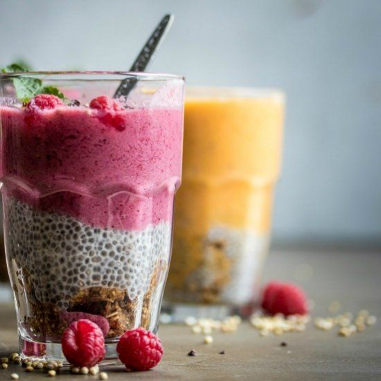

Crema base de Chía
Descripción:
Postre dulce de consistencia espesa con Chía que puede usarse como base para postres.
Ingredientes:
- 1 taza de Leche de Semillas
- Un tercio de taza de Chía molida
- 2 cucharadas de Miel
- Media cucharadita de Esencia de Vainilla
- 1 pizca de Sal
Instrucciones:
- Licuar todos los ingredientes.
- Dejar remojar media hora.